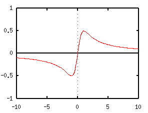
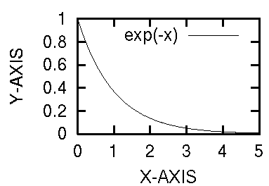
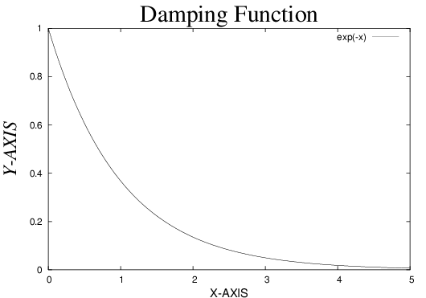
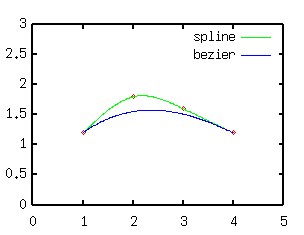
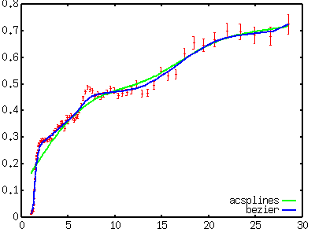
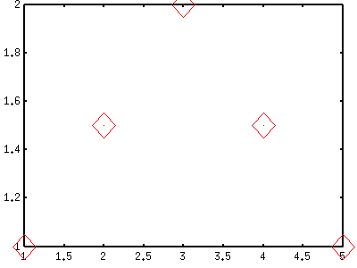
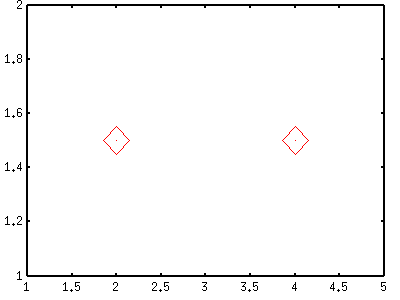
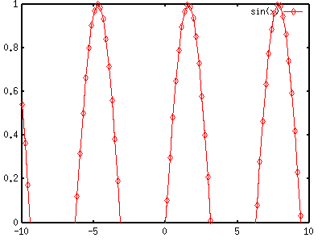
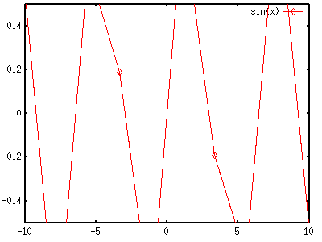
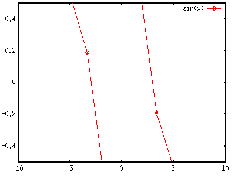

<!DOCTYPE HTML PUBLIC "-//W3C//DTD HTML 4.01 Transitional//EN">
<html lang="ja">
<head>
<title> gnuplot / plot (2)</title>
<!-- Generated 1999/ 7/21 -->
<!-- $Id: plot2.html,v 1.16 2006/03/03 01:08:59 kawano Exp $ -->
<meta http-equiv="content-type" content="text/html;charset=iso-2022-jp">
<link rel="stylesheet" href="style-new.css" type="text/css">
</head>
<body>

<table width="100%" border="0" cellpadding="0" cellspacing="0">
<tr><td bgcolor="#cccc90" width="320">
    <div align="left">
    <a href="index.html">
    
    </a></div></td>
    <td bgcolor="#cccc90">
      <div align="center"><h3> - not so Frequently Asked Questions - </h3> </div>
      <div class="update"> update 2004/9/5 </div>
    </td>
</tr>
<tr><td bgcolor="#fae8ba"></td>
    <td bgcolor="#fae8ba"><div class="navi"> 
<a href="index.html">           HOME </a> |
<a href="intro/index.html">     INTRODUCTION </a> |
<a href="general.html">         INFORMATION </a> |
<a href="gallery/index.html">   GALLERY </a> |
<a href="plot2-e.html">         ENGLISH </a>
</div></td></tr>
</table>
<hr class="topsep">


<table width="100%" border="0" cellpadding="0" cellspacing="0">
<tr><td id="menu">
 <p> not so FAQ</p>
  <ul>
    <li><a href="legend.html">      $BK^Nc(B(Legend) </a>
    <li><a href="tics.html">        $BL\@9(B(Tics) </a>
    <li><a href="label.html">       $B%i%Y%k(B(Label) </a>
    <li><a href="plot1.html">       2$B<!85%W%m%C%H(B </a>
    <ul>
      <li><a href="plot1.html#5.1">
           $B0lDj$NBg$-$5(B </a>
      <li><a href="plot1.html#5.2">
           $B:81&N>J}$N(BY$B<4(B </a>
      <li><a href="plot1.html#5.3">
           $B<4$r>C$9(B </a>
      <li><a href="plot1.html#5.4">
           $B=D2#Hf$N8GDj$5$l$??^(B </a>
      <li><a href="plot2.html#5.5">
           $B%<%m<4(B </a>
      <li><a href="plot2.html#5.6">
           $B8m:9K@$N2#@~(B </a>
      <li><a href="plot2.html#5.7">
           $BJ8;z$rBg$-$/(B</a>
      <li><a href="plot2.html#5.8">
           $B6J@~$GJd4V(B</a>
      <li><a href="plot2.html#5.9">
           $BOH@~>e%G!<%?E@$r>C$9(B </a>
      <li><a href="plot3.html#5.10">
           $BJ#?t$N%0%i%U(B </a>
      <li><a href="plot3.html#5.11">
           $B3J;R(B </a>
      <li><a href="plot4.html#5.12">
           $BJ#?t$N<4(B </a>
      <li><a href="plot4.html#5.13">
           $BG$0U$N3J;R(B </a>
      <li><a href="plot5.html#5.14">
           $B?^Cf$N?^(B </a>
      <li><a href="plot5.html#5.15">
           $BK@%0%i%U(B </a>
      <li><a href="plot6.html#5.16">
           2$B$D$N?^$rJB$Y$k!%(B</a>
      <li><a href="plot7.html#5.17">
           $B@55,3NN(<4(B </a>
      <li><a href="plot7.html#5.18">
           $B%G!<%?CM$r0u:~(B </a>
    </ul>
    <li><a href="plot3d.html">      3$B<!85%W%m%C%H(B </a>
    <li><a href="polar.html">       $B6K:BI8%W%m%C%H(B </a>
    <li><a href="parametric.html">  $BG^2pJQ?tI=<((B </a>
    <li><a href="datafile.html">    $B%G!<%?%U%!%$%k$N?tCM(B </a>
    <li><a href="postproc.html">    $B?^$rIA$$$?$=$N8e$O(B</a>
    <li><a href="misc1.html">       $B$=$NB>(B </a>
  </ul>
 <br>
</td>


<td id="content">


<h1><a name="top"> 2$B<!85%W%m%C%H$N$"$l$3$l(B ($B$=$N(B2)</a></h1>

<div align="center">
<a href="plot1.html"> 1 </a> | 
<a href="plot2.html"> 2 </a> | 
<a href="plot3.html"> 3 </a> | 
<a href="plot4.html"> 4 </a> | 
<a href="plot5.html"> 5 </a> | 
<a href="plot6.html"> 6 </a> | 
<a href="plot7.html"> 7 </a>
</div>


<h2><a name="5.5">X=0, Y=0$B$N%<%m<4$rIA$-$?$$!%(B </a></h2>

<p> <tt>set {x|y}zeroaxis </tt>$B$r;H$$$^$9!%%*%W%7%g%s$rIU$1$J$1$l$P!$(B
$B@~<o(B0($BE@@~(B)$B$GIA$+$l$^$9!%(Bls <i>line_stle</i>, lt <i> line_type</i>,
lw <i> line_width </i> $B$N%*%W%7%g%s$G%<%m<4$N@~<o$rJQ$($k$3$H$,$G$-$^$9!%(B
$B0J2<$NNc$G$O(B <tt> lt -1 </tt>$B$r;H$$!$(B
$BOH@~$HF1$8@~$rIA$$$F$_$^$7$?!%(B</p>

<pre class="sample">
gnuplot&gt; set xzeroaxis lt -1
gnuplot&gt; set yzeroaxis
</pre>

<div align="center"></div>


<div class="top"><a href="plot2.html#top"></a></div>
<h2><a name="5.6">$B8m:9K@$N@h$KIU$/2#@~$r>C$7$?$$!%(B</a></h2>

<p>$B8m:9IU$-$N%W%m%C%H$r$9$k$H!$8m:9K@$N@h$K>.$5$J@~$,F~$j$^$9!%(B
$B$3$l$r7y$&?M$b5o$^$9$7!$%G!<%?E@?t$,A}$($FMh$k$H<YKb$K$J$C$?$j(B
$B$7$^$9!%$3$l$r>C$9$K$O!$<!$N$h$&$K$7$^$9!%(B</p>

<pre class="sample">
gnuplot&gt; set bar 0
</pre>

<p>bar$B$N8e$N?t;z$G@~$ND9$5$r;XDj$7$^$9!%(B0$B$K$9$l$P@~$OI=<($5$l$^$;$s!%(B</p>

<p>$B$J$*!$(B<tt> set pointsize </tt>$B$G5-9f$NBg$-$5$rJQ$($F$b!$$3$N@~$ND9$5(B
$B$OJQ$o$j$^$;$s$N$G!$5-9f$H8m:9$N2#K@$N%P%i%s%9$r<h$j$?$1$l$P!$(Bbar $B$NCM(B
$B$bJQ$($?J}$,NI$$$G$7$g$&!%(B</p>

<pre class="sample">
gnuplot&gt; set pointsize 3
gnuplot&gt; set bar 3
</pre>


<div class="top"><a href="plot2.html#top"></a></div>
<h2><a name="5.7">$BJ8;z$rBg$-$/$7$?$$!%(B</a></h2>

<p> $BJ8;z$rBg$-$/$G$-$k$+$I$&$+$O!$?^$r=PNO$7$h$&$H$7$F$$$k%G%P%$%9$K0M(B
$BB8$7$^$9!%(Blabel$B$d(Btitle$B$N@_Dj$G$O%U%)%s%H$r;XDj$G$-$^$9$N$G!$Bg$-$a$N%U%)(B
$B%s%H$,;H$($k$N$J$i$=$l$G%U%)%s%H$rJQ99$7$FBg$-$/$G$-$^$9$,!$0F30LLE]$J(B
$B$b$N$G$9!%(B</p>

<p> $B=PNO$r(BPostScript$B$K$9$k$J$i!$Hf3SE*4JC1$KJ8;z$rBg$-$/$G$-$^$9!%J8;z(B
$B$rBg$-$/$9$k$N$G$O$J$/$F!$?^$r>.$5$/$9$k$N$G$9!%%U%)%s%H$NBg$-$5$OJQ$o(B
$B$i$J$$$N$G!$AjBPE*$KJ8;z$,Bg$-$/$J$j$^$9!%(BPostScript$B$J$i!$0u:~;~$KA4BN(B
$B$r3HBg$G$-$k$N$G>.$5$$?^$r:n$C$F$bLdBj$"$j$^$;$s!%(B</p>

<pre class="sample">
gnuplot&gt; set size 0.3,0.3
</pre>


<p> $B>/!96KC<$JNc$G$9$,!$>e$N$h$&$K?^$NBg$-$5$r=D2#(B30%$B$K$7$F$*$-$^$9!%(B
$B$3$l$G?^$r:n$j!$(BEPS$B$G=PNO$7$^$9!%$3$l$r:F$S3HBg$7$^$9!%IaDL$O!$(BX,Y$B$r(B
0.5$B!A(B0.7$BDxEY$K$7$F$*$/$H!$=PMh>e$,$C$?(BEPS$B$r(BLaTeX$B$NJ8=q$K<h$j9~$s$@;~$K!$(B
$BJ8;z$,DY$l$:$K$[$INI$$Bg$-$5$K$J$k$h$&$G$9!%(B</p>
<br clear="all">


<p> $BF1$8$/(BPostScript$B=PNO$K$F%U%)%s%H$r:Y$+$/;XDj$7$?$$$J$i(Blabel$B$d(Btitle$B$N(B 
     <tt> font </tt>option$B$r;H$C$F!$;HMQ$9$k%U%)%s%H$H%5%$%:$r;XDj$7$^$9!%(B
     $B$^$?!$(B<tt> set terminal </tt>$B$G$N%*%W%7%g%s$G!$4pK\$N%U%)%s%H%5%$%:(B
     $B$r;XDj$G$-$^$9!%0J2<$NNc$G$O4pK\$N%U%)%s%H$r%X%k%Y%A%+$N(B16pt$B$H$7!$(B
     $BI=Bj$H<4L>$K$=$l$>$lJL$N%U%)%s%H$H%5%$%:$r3d$jEv$F$F$$$^$9!%(B</p>

<pre class="sample">
gnuplot&gt; set terminal postscript enhanced "Helvetica" 16
gnuplot&gt; set title "Damping Function" font "Times-Roman,40"
gnuplot&gt; set xlabel "X-AXIS" font "Helvetica,20"
gnuplot&gt; set ylabel "Y-AXIS" font "Times-Italic,32"
gnuplot&gt; plot exp(-x)
</pre>

<div align="center">

</div>

<p> $B$?$@!$>e$K$b=q$$$F$$$^$9$,!$(Bgnuplot$B$G$3$3$^$GLLE]$J$3$H$r$d$kI,MW$,(B
     $B$"$k$+$I$&$+!$;d$H$7$F$O5?Ld$G$9!%(Bgnuplot$B$O%W%m%C%?!<$H$7$F3d$j@Z$j!$(B
     $B?^$re:No$K>~$j$?$$$J$i(B Tgif$B$J$I$r;H$C$?$[$&$,!$<+J,$N9%$_$K9g$&?^$r(B
     $B:n$j$d$9$$$H;W$$$^$9!%(B</p>


<div class="top"><a href="plot2.html#top"></a></div>
<h2><a name="5.8">$B%G!<%?E@$N4V$r3j$i$+$J6J@~$GJd4V$7$?$$!%(B</a></h2>

<p> gnuplot$B$K$O(B3$B<!$N(BSpline$BJd4VEy$K$h$C$F%G!<%?4V$rJd4V$9$k5!G=$,$"$j$^(B
$B$9!%Jd4V$7$?6J@~$rI=<($9$k$K$O!$(Bplot$B%3%^%s%I$N%*%W%7%g%s$K$"$k(Bsmooth$B$r(B
$B;H$$$^$9!%(Bsmooth$B$K$OJ?3jJ}K!$r;XDj$9$k%*%W%7%g%s$,$"$j!$(B3$B<!$N%9%W%i%$(B
$B%s$d%Y%8%(6J@~$r;XDj$G$-$^$9!%%9%W%i%$%s$O%G!<%?E@$rI,$:DL$kJd4V$r9T$$(B
$B$^$9$,!$%Y%8%($@$H%G!<%?E@$r!V@)8fE@!W$H$9$k6J@~$r0z$/$N$G!$%G!<%?E@$r(B
$BI,$:$7$bDL$j$^$;$s!%(B</p>


<p> $B<!$NNc$G$O!$(B3$B<!%9%W%i%$%s$H%Y%8%($G$NJd4V$rHf3S$7$F$$$^$9!%%G!<%?(B
$BE@$HJd4V7k2L$N6J@~$,6hJL$7$d$9$$$h$&$K!$=i$a$K%G!<%?$@$1$r5-9f$GIA$-!$(B
$B<!$KJd4V6J@~$r%9%W%i%$%s$H%Y%8%($r;XDj$7$F<B@~$G%W%m%C%H$7$F$$$^$9!%(B</p>

<pre class="sample">
gnuplot&gt; plot "test.dat" using 1:2 notitle with points, \
&gt;             "test.dat" using 1:2 smooth csplines \
&gt;                                  title "spline" with lines,\ 
&gt;             "test.dat" using 1:2 smooth bezier \
&gt;                                  title "bezier" with lines
</pre>

<div align="center"></div>


<p> $B%9%W%i%$%s4X?t$N%*%W%7%g%s(B <tt> csplines </tt>
 $B$O%G!<%?Jd4V$r9T$C$F$$$^$9$,!$%Y%8%(6J@~$r;H$&J}K!$O%G!<%?$r(B
$BJ?3j2=$9$k$b$N$G$"$C$FJd4V$G(B
$B$O$"$j$^$;$s!%0lJ}!$%9%W%i%$%s4X?t$r%G!<%?J?3j2=$K;H$&%*%W%7%g%s(B 
<tt>acsplines </tt>$B$b$"$j(B $B!$$3$l$K$h$C$F%G!<%?$N6a;w6J@~$r:n@.$9$kJ}K!$b$"(B
$B$j$^$9!%>e$NNc$G$O!$%G!<%?$N(BX,Y$B$NCM$@$1$r;H$$$^$7$?$,!$6a;w6J@~$r$R$/(B
$B$K$O!$3FE@$N=E$_(B($B8m:9(B)$B$rM?$($kI,MW$,$"$j$^$9!%0J2<$O!$8m:9IU$-$N<B83%G!<(B
$B%?$r!$%Y%8%($H%9%W%i%$%s$GJ?3j2=$9$kJ}K!$G$9!%(B</p>

<pre class="sample">
gnuplot&gt; plot "test.dat" using 1:2:3 notitle with yerrorbars, \
&gt;             "test.dat" using 1:2:3 smooth acsplines \
&gt;                                    title "acsplines" with lines,\ 
&gt;             "test.dat" using 1:2   smooth bezier \
&gt;                                    title "bezier"    with lines
</pre>




<p>$B%Y%8%(6J@~$O!$%G!<%?$NJQ2=$r$+$J$jDI?o$7$F$$$^$9$,!$%9%W%i%$%s$G$O!$(B
$BK\Ev$KBg;(GD$J%G!<%?$N%H%l%s%I$rI=$7$F$$$k$N$,J,$+$k$H;W$$$^$9!%%G!<%?(B
$B$N%W%m%C%HCf$K6J@~$r(B"eye guide"$B$GIA$-9~$`$3$H$O$7$P$7$P9T$o$l$^$9$,!$(B
gnuplot$B$r;H$($P$3$NMM$J6J@~$,4JC1$KIA$1$^$9!%(B</p>


<p>$B%9%W%i%$%s$K$h$k6a;w6J@~$G$O%G!<%?E@$N=E$_$,I,MW$G$9$,!$A4%G!<%?$K(B
$BF1$8=E$_$r$+$1$k$3$H$b$G$-$^$9!%$3$N>l9g$O!$(B<tt> using 1:2:(1.0) </tt>
$B$N$h$&$K(B3$B%+%i%`L\$N%G!<%?$H$7$F>o$K(B1.0$B$r;H$&$h$&$K$7$^$9!%(B</p>


<div class="top"><a href="plot2.html#top"></a></div>
<h2><a name="5.9">$BOH@~>e$K$"$k%G!<%?E@$r>C$7$?$$!%(B</a></h2>

<p> $BOH@~6a$/$K$"$k%G!<%?$d@~J,$O!$OH$+$i$O$_=P$5$J$$MM$K@Z$j<h$k(B($B%/%j%C(B
$B%W$9$k(B)$B$3$H$,$G$-$^$9!%(B<tt> set clip </tt>$B$O!$%G!<%?$r$I$N$h$&$K%/%j%C(B
$B%T%s%0$9$k$+$r@)8f$7$^$9!%(Bclip$B$K$O(Bpoints, one, two $B$N(B3$B$D$N%?%$%W$,$"$j(B
$B$^$9!%>/!9J,$+$j$K$/$$OC$J$N$G!$<!$N$h$&$J(B 5$BE@$N%G!<%?$NNc$r;H$C$F@bL@(B
$B$7$^$9!%(B</p>
<pre class="file">
#  X     Y  
   1.0   1.0
   2.0   1.5
   3.0   2.0
   4.0   1.5
   5.0   1.0
</pre>


<p>$B$3$N%G!<%?$rIaDL$K(Bpoints$B$r;H$C$FI=<($9$k$H!$:G=i$NE@(B(X=1)$B$H:G8e$NE@(B
(X=4)$B$O?^$N6y$K!$??Cf$NE@$O>e$NOH@~>e$KI=<($5$l$^$9!%<!$N?^$O!$J,$+$j(B
$B$d$9$$$h$&$K(B<tt> set pointsize 10 </tt>$B$H$7$F!$E@$r3HBg$7$?$b$N$G$9!%(B</p>

<pre class="sample">
gnuplot&gt; set pointsize 10
gnuplot&gt; plot "test.dat" notitle with points
</pre>



<p> $B$3$NNc$NMM$K!$FC$KBg$-$J5-9f$G?^$rIA$$$?>l9g$O!$OH>e$NE@$,HQ$o$7$/$J$j$^$9!%(B
$B%/%j%C%W$r;XDj$9$k$H!$$3$l$i$NE@$O>C$($^$9!%(B</p>
<br clear="all">

<pre class="sample">
gnuplot&gt; set clip points
gnuplot&gt; plot "test.dat" notitle with points
</pre>



<p>$B%/%j%C%W$r;XDj$7$?>l9g$G!$(BX=1,3,5$B$G$N%G!<%?$,>C$($F$$$^$9!%<B$O!$%G!<(B
$B%?$,OH@~>e$KL5$/$F$b!$$=$3$K6a$1$l$P%/%j%C%T%s%0$,<B9T$5$l$^$9!%>e$NNc(B
$B$G$b!$(BY$B<4$N>e8B$r(B2.1$B$^$G9-$2$F$b!$(BX=3$B$N%G!<%?$OI=<($5$l$^$;$s!%$I$l$/(B
$B$i$$6aIU$/$H>C$($k$N$+$O!$NI$/$o$+$j$^$;$s!%(B</p>


<p> $B%/%j%C%W$N<!$N%?%$%W$O(B <tt> set clip one </tt>
$B$G!$IA$$$F$$$k@~$,OH30$K$O$_=P$9$H$-$K!$OH@~IU6a$G$I$N$h$&$K$9$k$+$r(B
$B;X<($9$k$b$N$G$9!%$3$l$O%G%U%)%k%H$GM-8z$K$J$C$F$*$j!$(B
$B%0%i%U$OOH@~$K8r$o$k$H$3$m$^$GIA$+$l$^$9!%$3$l$rL58z$K$9$k(B(<tt> set noclip </tt>)$B$H!$(B
$BOH@~$H8r$o$k@~J,$,>C$5$l$^$9!%(B</p>
<br clear="all">

<p> $B!VOH@~$H8r$o$k@~J,!W$H$$$&$N$,J,$+$j$K$/$$$+$b$7$l$^$;$s!%(Bgnuplot
$B$O!$4X?t$rI=<($9$k$H$-$K!$(Bsampling rate$B$G;XDj$5$l$F$$$k?t(B($BI8=`$G$O(B100
$BE@(B)$B$@$1$N:BI8CM$r7W;;$7!$$=$N4V$rD>@~$G7k$s$G$$$-$^$9!%$D$^$j!$4X?t$N(B
$B6J@~$r<B:]$KIA$$$F$$$k$N$G$O$J$/!$>.$5$J@~J,$r7R$2$F$=$l$i$7$/8+$;$F$$(B
$B$k$o$1$G$9!%:BI8E@$,OH$N30$K$"$k$H!$$3$N@~J,$,OH@~$H8r$o$j$^$9!%$3$N;~(B
$B$K!$@~J,$rA4It>C$9$+(B(noclip)$B!$OH$H8r$o$k$^$G$rIA$/$+(B(clip)$B$r!$(B
<tt> set clip one </tt>$B$G;X<($7$^$9!%(B</p>

<p> y=sin(x)$B$r;H$$!$(BY$B$NHO0O$r(B[0:1]$B$K$7$FI=<($7$F$_$^$7$g$&!%$3$N$H$-!$%0%i(B
$B%U$O(BX$B<4$H2?EY$+8r$o$j$^$9!%$5$i$K!$(B<tt> clip one </tt>$B$r(BOFF$B$K$7$FHf3S$7$^$9!%(B
$BI=<($O(Blinespoints$B$r;H$$$^$9!%5-9f$,IA$+$l$F$$$kItJ,$,!$(Bgnuplot
$B$,:BI8$r<B:]$K7W;;$7$?ItJ,$G!$$=$N4V$N@~$,!$>e$G8@$&@~J,$K$J$j$^$9!%(B</p>

<pre class="sample">
gnuplot&gt; set clip one
gnuplot&gt; plot sin(x) with linespoints
gnuplot&gt; set noclip one
gnuplot&gt; replot
</pre>

<div align="center"><table border="0">
 <tr><td> </td></tr>
 <tr><td align="center"> clip one </td></tr>
 <tr><td> </td></tr>
 <tr><td align="center"> noclip one </td></tr>
</table></div>


<p>$B:G8e$N%/%j%C%W$O(B<tt> set clip two </tt>$B$G$9!%$3$l$O(B clip one$B$N>l9g(B
$B$HF1MM$K!$OH30$K@~J,$,$O$_=P$7$?$H$-$N=hM}$r;XDj$9$k$b$N$G$9$,!$@~J,$N(B
$BN>C<$$$E$l$b$,OH$N30$K$"$k>l9g$N$b$N$G$9!%I8=`$G$O(Bclip$B$G$9!%$"$^$j$3(B
$B$N$h$&$JNc$OL5$$$H;W$&$N$G$9$,!$L5M}LpM}:n$k$H$9$l$P!$<!$N$h$&$J$b$N$G(B
$B$7$g$&$+!%(B</p>

<pre class="sample">
gnuplot&gt; set yrange [-0.5:0.5]
gnuplot&gt; set samples 10
gnuplot&gt; set clip two
gnuplot&gt; plot sin(x) with linespoints
gnuplot&gt; set noclip two
gnuplot&gt; replot
</pre>

<div align="center"><table border="0">
 <tr><td> </td></tr>
 <tr><td align="center"> clip two </td></tr>
 <tr><td> </td></tr>
 <tr><td align="center"> noclip two </td></tr>
</table></div>

<p> $B>e$NNc$N$h$&$K%5%s%W%j%s%0?t$r6KC<$K>/$J$/$9$k$H!$@~J,$K$h$C$F$O!$(B
$B$=$NN>C<$,(BY$B$N>e8B$H2<8B$N30B&$KMh$k;~$,$"$j$^$9!%$3$NMM$J@~J,$rIA$/$+(B
$B$I$&$+$,!$(Bclip two$B$K$h$C$FJQ2=$7$^$9!%(B</p>


<div class="top"><a href="plot2.html#top"></a></div>
</td></tr></table>
<hr class="topsep">


</body>
</html>

